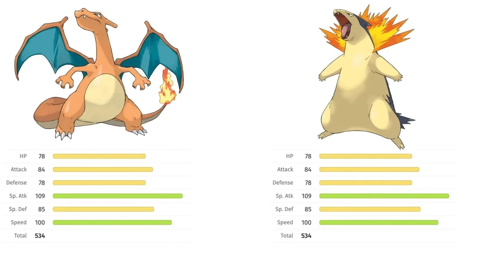

Generally the most important part of a game, the gameplay, is probably the place where these games fall the flattest for me, which is a major part of why I believe them to be the weakest in the series. The most glaring issue is the level curve, with the final gym leader of Johto’s ace pokemon being level 40, the ace of the champion being level 50, the final gym leader of Kanto only being level 58, and the final secret battle with Red being at a staggering level 81, a full 23 levels higher than the second highest level fight in the game. This leaves the player needing to grind levels from wild pokemon or low level trainer battles, which takes a long time, and severely hurts the pacing of the game.
Red's fight leading off with a pokemon in the 80s
The non-linear design of the region was certainly an interesting idea to contrast from Kanto having a (mostly) strict linear progression from gym to gym with a few story dungeons mixed in, however I don’t think it was executed well. The gym leaders still have a clear order of levels, as do the dungeons, which kinda forces the player to follow a specific path. And due to this, the wild pokemon are now required to be at an extremely low level as you could theoretically encounter them very early into the game, leaving there to be very few good places to earn XP to reach the levels the gyms ask you to be. This leaves a game that takes a long time to get from goal to goal, with the really good moments in the game such as the fights with Blue and Red being something of a chore to actually reach a place where you can complete them.
While Pokemon games have generally never had particularly exciting stories, the plots that were there did serve to drive the player forward and give them a reason to continue playing the game and making progress. However, I think that the Kanto and Johto regions are significantly lacking in this aspect, with Johto honestly being significantly worse. In a similar theme with the rest of my issues with the game, I think the story is very poorly paced. Things take far too long to get started, and even when it does the major story events are very spaced out and don’t really serve to break up the progression of the gyms in a particularly interesting way. Few major story moments really made any lasting impact, with the biggest ones being Slowpoke Cave and the Team Rocket hideout, which I don’t think served to create an interesting sense of progression throughout the region.
The Rocket hideout doesn’t serve as a climax to the story, which wouldn’t be a problem, if that wasn’t the finale to the story. Things kinda just end at the end of the Rocket hideout, with very little buildup to it as a climax and very little aftermath besides the red Gyarados no longer rampaging. The lack of a climax significantly hurts the game, as you reach the credits without any real sense of what you actually accomplished. Even in the Kanto games, which I thought had a fairly lacking plot, I definitely came away with a stronger sense of what I had accomplished and the way the game brought Giovanni back one more time after Silph Co. served as a very memorable takeaway that let the games stick in my mind much better.
The climax of the story doesn't resolve much, with team Rocket just disappearing again
Outside of the main plot featuring team rocket, they did do an overall decent job of trying to make the minor characters such as the gym leaders more important. I liked Jasmine having a short plot point about her sick pokemon, and while Clair is often criticized for her childish behavior after being defeated, it left her as a much more memorable character than most in this game. However, I didn’t find the Rocket characters to be very memorable, the rival was one of the weaker in the franchise who also doesn’t have much resolution to his story, and most of the gym leaders were still just short one offs like they are in all of the other games.
The region of Johto itself also has some flaws in its design. One of the biggest criticisms the games get from the community, that I will back up, is that the gym leaders lack Johto pokemon. Out of eight gym leaders, only half of them, Clair, Pryce, Jasmine, and Whitney, actually have Johto pokemon as their ace, and even then the majority of the rest of their teams are made up of Kanto pokemon. While having out of region pokemon is far from a problem, it does serve as a symptom of another problem with the game, the fact that the majority of the new pokemon introduced are only available very late into the game and even still most of them are very weak.
If you were to replace the non-Johto aces with Johto pokemon, you might end up with something like this:
Falkner - Noctowl
Bugsy - Heracross
Morty - Misdreavus
Chuck - Hitmontop
Here we see an issue, the fact that Johto pokemon just tend not to have very powerful stats or tools. Noctowl is weaker than its analogous Pigeot, Misdreavus is the solitary ghost type Johto pokemon and it’s significantly weaker than Gengar, Hitmontop is a strong pokemon nowadays but that’s primarily due to its ability intimidate which it gets in generation 3, and the issues with Johto’s pokemon continue to exist even outside of suitable replacements for gym leaders’ aces. Even the powerful ones like Tyranitar are only available extremely late into the game, and a lot of the best pokemon to come out of the region are just evolutions of Kanto pokemon such as Crobat and Blissey. This leaves players likely to have a team consisting of a starter and primarily Kanto pokemon, which makes the games feel a little bit samey to the originals.
One of the best additions to the game, the ability to visit an entire other region in Kanto, is honestly super cool and one of my favorite parts of the game. However, I think even this isn’t without criticism, as the region feels fairly empty due to the player already having the HMs for exploration and there being no story involved, making it trivial to simply visit each gym, defeat the gym leader, and leave. I like the fact that there’s a ton more space to explore and a lot of new pokemon to find in the new areas, but I do think it could have had something more of a small plot involved and a level curve that actually led the player to the 70s where they would then be better prepared to face Red as their final challenge.

Map of the Johto + Kanto regions, credit to u/skenera on reddit
These are much smaller issues in the grand scheme of things, but I do think they serve as useful symbols for the problems that Johto has. Stuff like the entire Cyndaquil line having the exact same base stats as the entire Charmander line and Feraligatr’s name having an obvious missing letter are perfect allegories for the way that Johto somewhat exists in the shadow of Kanto and that development had to be rushed. While these two specific things aren't a big deal to me, the way the game was rushed and crammed in made the experience of playing the game significantly worse for me.
Typhlosion and Charizard have the exact same stats, which is also true of the entire evolution lines
While this essay has largely been a criticism of the generation 2 Johto games, I obviously can’t go without mentioning the remakes in generation 4. The gameplay improvements such as the physical-special split, abilities, and generally better UI and UX make for a much more enjoyable experience. I absolutely adore the art style of these games, and personally think they’re the most beautiful in the entire franchise. Music is fantastically arranged in the remakes, and overall the region is really brought to life.
However, even the remakes fail to address some of the core flaws of the original games. The level curve is still very sporadic leaving long sections of grinding, the open nature of the region wasn’t improved in any significant way nor was it made more linear, the gym leaders didn’t get revamped teams, only receiving minor tweaks to the levels and movesets of their pokemon, and the Kanto region still feels somewhat empty without any clear progression to reach that final iconic fight with Red.
The Johto games aren’t without things to love. The region is one of my absolute favorite to explore, the games feature some of the most iconic legendary pokemon designs in the franchise, the introduction of shiny pokemon was a fan favorite feature and the red Gyarados from the lake is extremely memorable, the music is fantastic, they included two entire regions to explore, and the list goes on. However, even among the things that I praise about the game, most of them are in some way flawed and I wish that the games had been treated better at least the first time around and especially in the remakes.